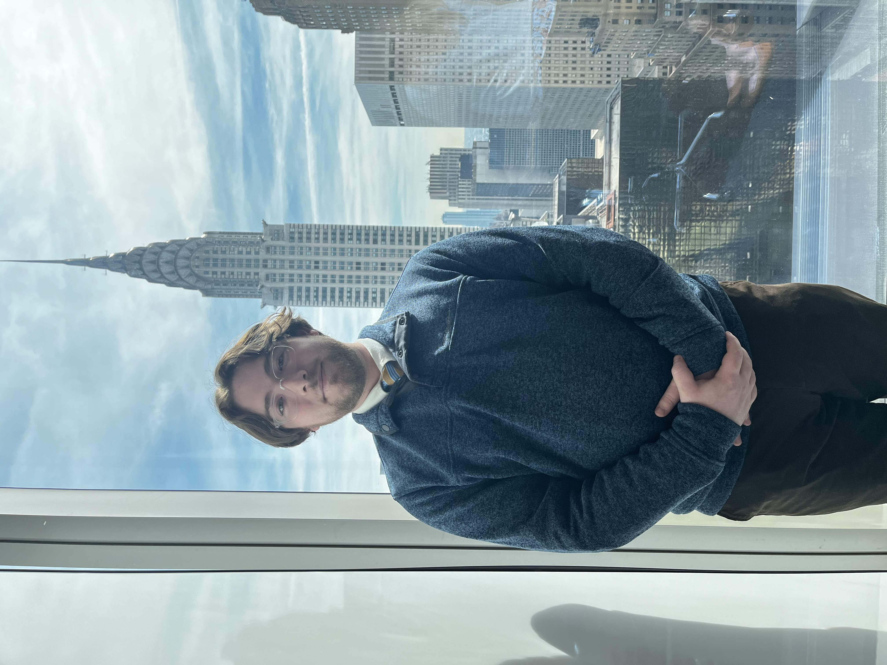

Mitchell Friedman 2022

Mitchell Friedman presenting at Prudential Financial 2022.
I am a student at Syracuse University majoring in psychology and minoring in marketing. I am most interested in cognitive psychology, and I want to use my psychology and marketing knowledge to continue developing my skills to become a CX expert.
During my short time at Syracuse University, I have been promoted to a Lead at Syracuse’s Office of Student Engagement, have received certifications in Google’s Fundamentals of Digital Marketing and Google Ads Search, as well as a certification in HubSpot’s Growth Driven Design. The summer before my senior year of college I interned for Prudential Financial on Customer Experience- Journey Management team where I strengthened my knowledge for CX, became an expert at journey mapping and design sprints, and continued strengthening my presentation skills.
In my free time I am an avid fan of the arts, I watch movies, television, and am a huge fan of music (currently the Grateful Dead). I also am working on becoming a better chef and reigniting my love for running.
Mitchell Friedman 2022
Mitchell Friedman presenting at Prudential Financial 2022.